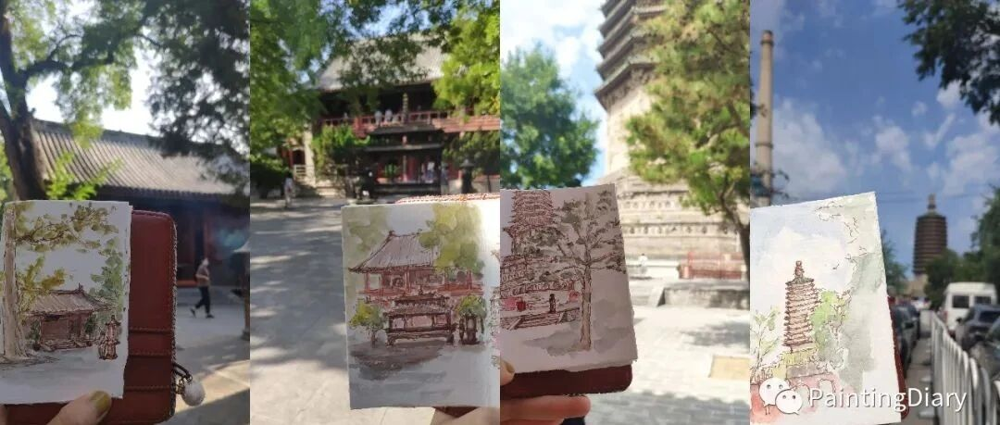

宗教密度过高的写生日
今天本来只是临时起意想来天宁寺转转，
因为听说这座古塔是北京城区现存最古老的地上建筑，也是北京最高的密檐式砖塔，在2022年7月15日，终于恢复开放。

虽然不太懂，但是看到拿着佛经边念边转塔的人，我就有样学样也转了三圈。
古塔上的佛像很多已经风化残损，但是剩下的部分还是能看出雕刻工艺之精美。并且砖块程度各异地微微发霉变色，颜色斑斓，富有层次质感，非常有韵味。

吃过午饭之后，本来想在附近再看看佛塔的，结果发现离白云观好近，又临时预约了白云观。
白云观门票10元，还可以领香，我又开始有样学样地上香。
旁边的保安大哥还指导了下，左手在上右手在下捏住香，鞠躬之后用左手上香，插在香炉里，这么一通纠正之后，仪式感突然上来了。

途中看到好几位白须飘飘的道长，有的在和弟子说话。还看到一位，穿着更为讲究，感觉地位更高些，在跟一队身穿消防制服的人员谈话。突然有种道长穿越过来的感觉。

这种坐地铁到达热闹的市中心，轻轻一转，从街角显露出一座佛塔、缓缓走入一座寺庙或者道观的感觉太奇妙了。
等到气温渐冷，落叶遍地、柿子火红的深秋，一定更加适合这个主题的写生 ～期待～下回争取画到道长或者方丈
～期待～下回争取画到道长或者方丈
好啦今天先到这，欢迎评论、留言or给个"在看"
～谢谢～下回见～